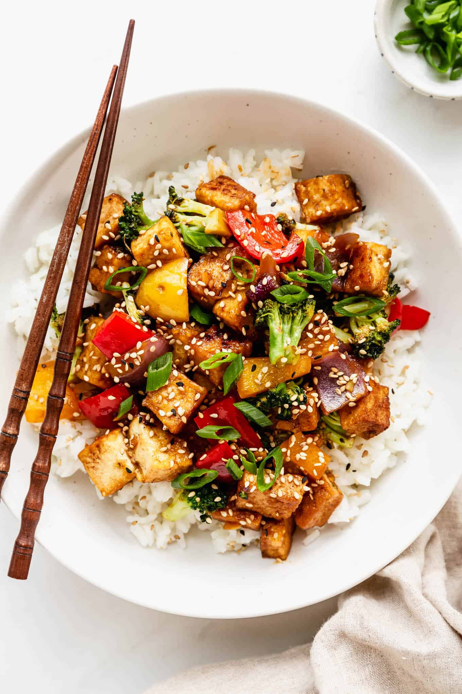

Simple Stir Fry

Description
Do you ever have leftover ingredients you're not quite sure what to do with?
Throwing everything together in a giant wok is a great solution! This is an
extremely forgiving recipe that can be adjusted to your lifestyle and tastes.
This recipe is fairly straight forward. You will need a protein, a grain, and vegetables.
But each of these can be whatever is your favorite. I will choose my favorite ingredients for
this example.
Ingredients
- 1 block of tofu
- 1 large onion
- 2 bell peppers
- 1 cup of rice
- 1 Tbsp vegetable oil
Steps
- First, prep your veggies. Thinly slice the onion and peppers.
- Rinse and start cooking the rice in a rice cooker.
- Heat oil in a large pan or wok. Add tofu first and fry for 5-10 minutes, until they become golden brown. Remove from pan.
- Add onion to wok for 3-5 minutes, then add peppers.
- Once veggies are cooked, combine ingredients.
Return to the Homepage